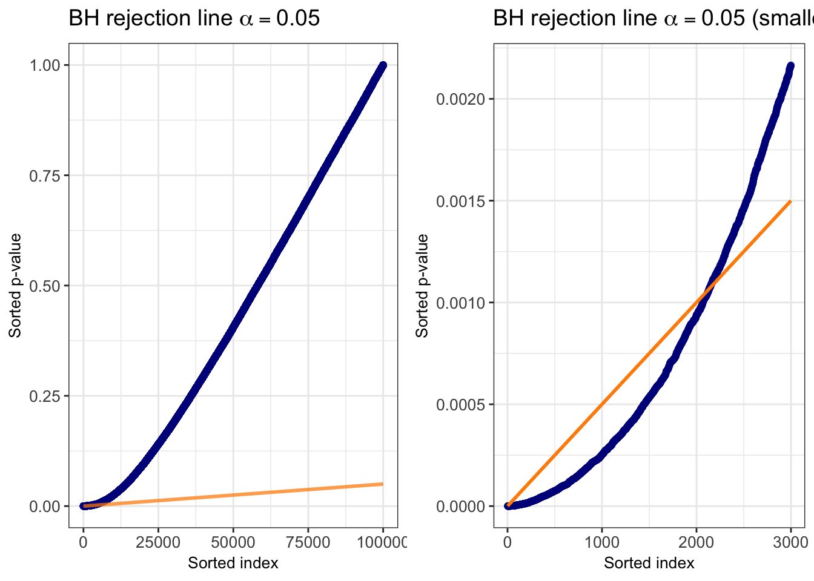
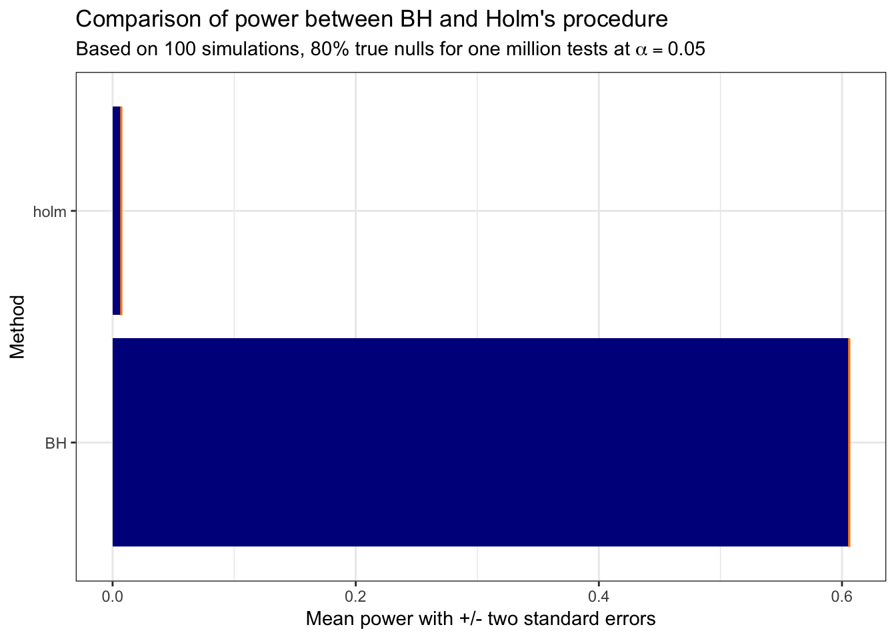
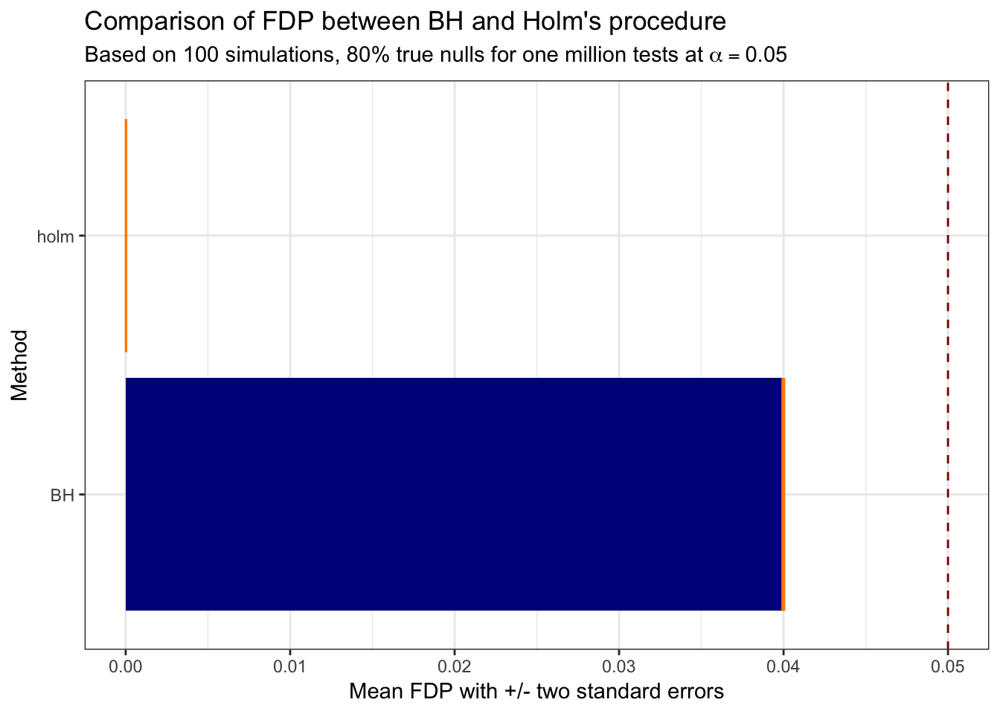

Chapter 5 False discovery rate
Introduced by Benjamini and Hochberg (1995), the false discovery rate (FDR) is a multiple testing error control criterion ideally suited for scenarios such as GWAS where we are potentially testing millions of SNPs. Rather than trying to make it unlikely that even one false discovery is made, we can instead control the expected false discovery proportion (FDP):
\[ \text{FDP} = \frac{V}{\text{max}(R, 1)} = \begin{cases} \frac{V}{R},\text{ if } R \geq 1 \\ 0,\text{ otherwise} \end{cases} \]
However, we do not observe \(V\) which means the above FDP is an unobserved random variable. The FDR is simply defined as its expectation,
\[ \text{FDR} = \mathbb{E}[\text{FDP}]. \]
From this definition, it is clear that FDR control tells us nothing about an individual test, but rather if we repeated experiments many times then on average we will control the FDP at our desired target level \(\alpha\). This only provides us with a very weak bound on the probability of observing the FDP exceed a threshold folloinwg Markov’s inequality (useful to show this or no?). It’s easy to see that FWER control implies FDR control: we know that \(1_{\{V \geq 1\}} \geq\) FDP since \(V \leq R\), and taking the expectation of both sides gives us \(\mathbb{P}(V \geq 1) \geq\) FDR. The converse does not hold obviously, as FDR is equivalent to FWER only under the global null setting where \(V = R\), all discoveries/rejections are false positives. Meaning, FDR can be viewed as a very weak form of error control. This is not necessarily a negative feature, but instead gives us greater power in addressing the multiplicity problem compared ot FWER control.
5.1 Benjamini-Hochberg procedure
Benjamini and Hochberg (1995) proposed the following procedure, which we’ll refer to as BH, to control the FDR at target level \(\alpha\):
- Sort the p-values in ascending order: \(p_{(1)} \leq \cdot \cdot \cdot \leq p_{(n)}\)
- Let \(i_0\) be the largest \(i\) for which \(p_{(i)} \leq \frac{i}{n} \alpha\)
- Reject all \(H_{(i)}\) with \(i \leq i_{(0)}\)
The following code chunk generates the results for one million tests, to visualize this step-up procedure using same proportion of null results (80%) as the Holm’s demonstration above but with fewer tests (100,000) and weaker alternative effect size (\(\mu = 2\)) just for visualization purposes.
sim_bh_data <- function(n_null, n_alt, alpha, alt_effect_size = 3) {
# First generate vector of z-scores for both null and alternatives:
pvals <- c(rnorm(n_null, 0, 1), rnorm(n_alt, alt_effect_size, 1)) %>%
# Now generate the p-values:
{2 * pnorm(-abs(.))}
# Generate a vector of the actual test types:
test_types <- c(rep("null", n_null), rep("alt", n_alt))
# Now use the p.adjust function to create vectors of the adjusted p-values
# for BH:
bh_pvals <- p.adjust(pvals, method = "BH")
# Return a dataframe with the p-values and a column indicating whether or not
# it was rejected under BH and reutnr
data.frame("pvals" = pvals,
"bh_rejection" = bh_pvals < alpha) %>%
return
}
# Generate the example data, then arrange it by the p-value and create
# a column that serves as the BH threshold:
bh_data_example <- sim_bh_data(80000, 20000, alpha = 0.05,
alt_effect_size = 2) %>%
arrange(pvals) %>%
mutate(test_i = 1:n(),
bh_threshold = .05 * test_i / n())
# Access cowplot
# install.packages("cowplot")
library(cowplot)
all_bh_plot <- bh_data_example %>%
ggplot(aes(x = test_i)) +
geom_point(aes(y = pvals), color = "darkblue", alpha = 0.5) +
geom_line(aes(y = bh_threshold), color = "darkorange", size = 1) +
labs(x = "Sorted index", y = "Sorted p-value",
title = latex2exp('BH rejection line $\\alpha = 0.05$')) +
theme_bw() +
theme(axis.title = element_text(size = 10),
axis.text = element_text(size = 10),
plot.title = element_text(size = 14))
zoomed_bh_plot <- bh_data_example %>%
dplyr::filter(test_i <= 3000) %>%
ggplot(aes(x = test_i)) +
geom_point(aes(y = pvals), color = "darkblue", alpha = 0.5) +
geom_line(aes(y = bh_threshold), color = "darkorange", size = 1) +
labs(x = "Sorted index", y = "Sorted p-value",
title = latex2exp('BH rejection line $\\alpha = 0.05$ (smallest 3000 p-values)')) +
theme_bw() +
theme(axis.title = element_text(size = 10),
axis.text = element_text(size = 10),
plot.title = element_text(size = 14))
plot_grid(all_bh_plot, zoomed_bh_plot, ncol = 2)
The BH procedure is adaptive in the sense that it depends on the specific p-values, meaning that two different sets of p-values could generate different rejection thresholds for the same target level \(\alpha\). Most importantly, under the assumption of independent tests (just like Hochberg’s procedure), BH controls the FDR at target level \(\alpha\) regardless if all tests or just proportion are truly null. In fact, BH actually provides conservative FDR control, where the FDR under BH for target level \(\alpha\) is such that,
\[ FDR = \frac{n_0}{n} \cdot \alpha \leq \alpha. \]
The next code chunk compares the performance of BH with Holm’s, demonstrating the tremendous increase in power:
bh_holm_sims <- map_dfr(1:100,
function(x) {
compare_multi_testing(n_null = 800000,
n_alt = 200000,
alpha = .05,
method1 = "BH",
method2 = "holm") %>%
mutate(sim_i = x)
})
# Display the comparison of power (S / n_alt) between the two methods:
bh_holm_sims %>%
# Calculate the power:
mutate(power = S / (n - n0)) %>%
# Can just select the method, power, and sim_i columns
select(method, power, sim_i) %>%
# Now generate the violin plot comparing the power distribution for
# both methods:
ggplot(aes(x = method, y = power)) +
stat_summary(fun.y = mean, geom = "bar", fill = "darkblue") +
stat_summary(fun.data = mean_se, geom = "errorbar", mult = 2, color = "darkorange") +
coord_flip() +
theme_bw() +
labs(x = "Method",
y = "Mean power with +/- two standard errors",
title = "Comparison of power between BH and Holm's procedure",
subtitle = TeX('Based on 100 simulations, 80% true nulls for one million tests at $\\alpha = 0.05$'))
But as the saying goes, with great power comes great responsibility, because a method for controlling FDR is not appropriate for every situation such as one with more costly mistakes. The following comparison between the FDP for Holm’s and BH reveals that conservative nature of BH in this case actually controlling the FDR at \(0.8 \cdot 0.05 = 0.04\), clearly less than the target level FDR of 0.05. Several methods have been developed addressing this conservative nature of BH, improving upon its power while including guaranteed FDR control. These will be covered in future notes.
# Display the comparison of FDP (V / R) between the two methods:
bh_holm_sims %>%
# Calculate the fdp:
mutate(fdp = V / R) %>%
# Can just select the method, FDP, and sim_i columns
select(method, fdp, sim_i) %>%
# Now generate the violin plot comparing the power distribution for
# both methods:
ggplot(aes(x = method, y = fdp)) +
stat_summary(fun.y = mean, geom = "bar", fill = "darkblue") +
stat_summary(fun.data = mean_se, geom = "errorbar", mult = 2, color = "darkorange") +
geom_hline(yintercept = .05, linetype = "dashed", color = "darkred") +
coord_flip() +
theme_bw() +
labs(x = "Method",
y = "Mean FDP with +/- two standard errors",
title = "Comparison of FDP between BH and Holm's procedure",
subtitle = TeX('Based on 100 simulations, 80% true nulls for one million tests at $\\alpha = 0.05$'))
Proof:
For each \(i \in \mathcal{H}_0\) let \(V_i = 1_{\{ H_i rejected\}}\), then
\[ \text{FDP} = \sum_{i \in \mathcal{H}_0} \frac{V_i}{\text{max}(R, 1)}. \]
Let’s just assume that \(\mathbb{E}[V_i / \text{max}(R, 1)] = \alpha / n\). Using this fact the result immediately follows:
\[ \text{FDR} = \mathbb{E}[\text{FDP}] = \sum_{i \in \mathcal{H}_0} \mathbb{E} \Big[\frac{V_i}{\text{max}(R, 1)} \Big] = \sum_{i \in \mathcal{H}_0} \frac{\alpha}{n} = \frac{n_0}{n} \cdot \alpha. \]
Now comes the difficult part, proving the above claim that \(\mathbb{E}[V_i / \text{max}(R, 1)] = \alpha / n\).
Insert martingale proof
References
Benjamini, Yoav, and Yosef Hochberg. 1995. “Controlling the False Discovery Rate: A Practical and Powerful Approach to Multiple Testing.” Journal of the Royal Statistical Society. Series B (Methodological) 57 (1). [Royal Statistical Society, Wiley]:289–300. http://www.jstor.org/stable/2346101.